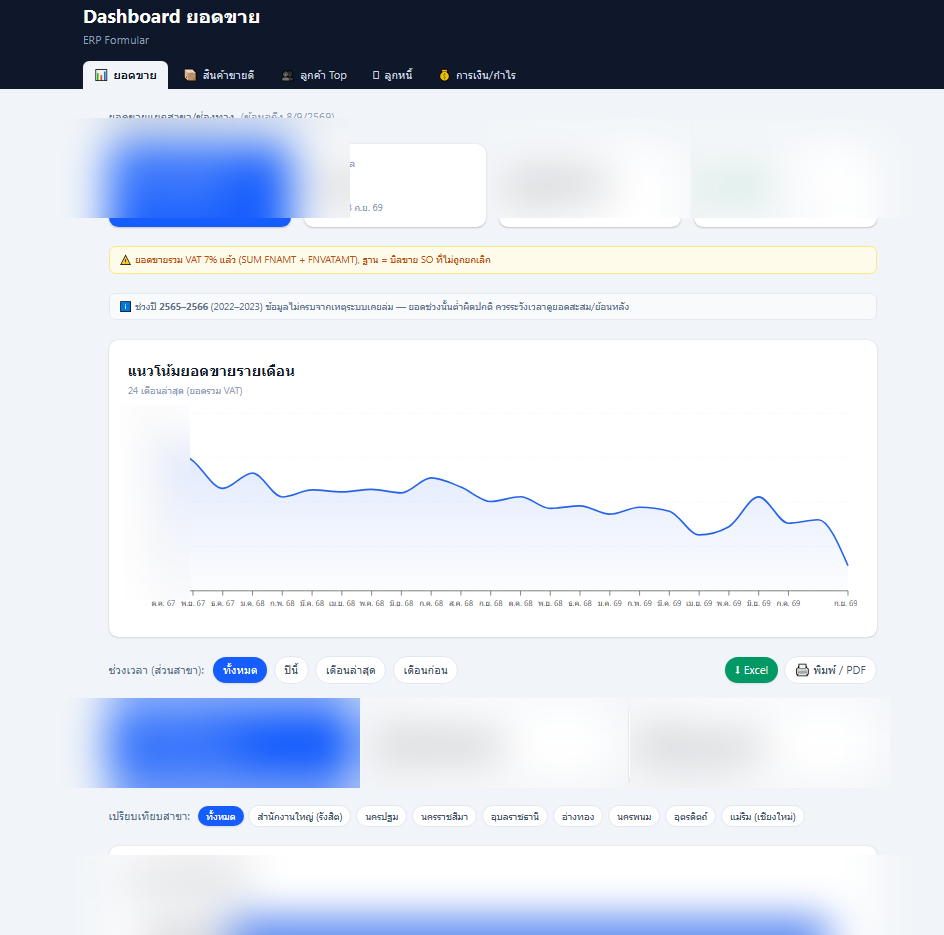
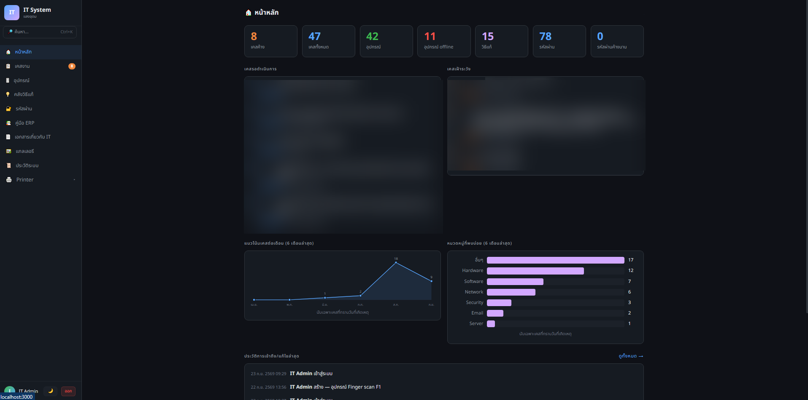

เว็บไซต์แสงอุดม ไลท์ติ้ง เซ็นเตอร์
เว็บแคตตาล็อกสินค้าของบริษัท — static site ไม่มี backend
- ปัญหา
- บริษัทเดิมใช้บริการเว็บสำเร็จรูปที่มีค่าเซอร์วิสรายปี และปรับแต่งเนื้อหา/ดีไซน์เองได้จำกัด
- วิธีแก้
- สร้างเว็บ static เองทั้งหมด มีข้อมูลสินค้า 479 ชิ้นใน JSON ไฟล์เดียว ใช้ GitHub Actions สร้าง 24 หน้าหมวดหมู่อัตโนมัติทุกครั้งที่แก้ข้อมูล พร้อม filter/search/pagination และปุ่ม LINE ลอย
- ผลลัพธ์
- ลดค่าใช้จ่ายและค่าเซอร์วิสรายปีลงได้ ปรับแต่งเนื้อหา/ดีไซน์เว็บได้เองมากกว่าเดิม


Catalog Flipbook
แคตตาล็อกสินค้าเก่า แปลงเป็นเว็บพลิกหน้าเหมือนหนังสือจริง
- ปัญหา
- แคตตาล็อกสินค้าเดิมเป็นไฟล์รูปภาพ 232 หน้า รวม 332MB เปิดดูออนไลน์ไม่ได้
- วิธีแก้
- ทำเว็บพลิกหน้าด้วย StPageFlip, บีบอัดรูปเหลือ 80.5MB (JPG → WebP), แยกรูป 2 ขนาด (ดูปกติ/ซูม) พร้อม lazy load โหลดเฉพาะหน้าที่ใช้จริง
- ผลลัพธ์
- เปิดดูได้ลื่นบนมือถือ ไม่ต้องโหลดรูปทั้งหมดพร้อมกัน deploy อัตโนมัติผ่าน Vercel


PDF Desk (Doc Convert)
เว็บรวมเครื่องมือจัดการไฟล์ PDF 8 อย่าง ทำงานฝั่ง browser ล้วนๆ
- ปัญหา
- งานแปลง/จัดการไฟล์ PDF ต้องใช้เว็บออนไลน์ทั่วไปที่ต้องอัปโหลดไฟล์ไปเซิร์ฟเวอร์คนอื่น เสี่ยงข้อมูลรั่ว
- วิธีแก้
- สร้างเว็บทำเอง 8 เครื่องมือ (merge, split, jpg↔pdf, shrink, html/excel→pdf, pdf/a) ประมวลผลทุกอย่างในเบราว์เซอร์ผู้ใช้ ไม่มีไฟล์ไหนถูกส่งออกนอกเครื่อง
- ผลลัพธ์
- ใช้งานได้ฟรี ปลอดภัยกับไฟล์เอกสารบริษัท ไม่ต้องพึ่งเว็บภายนอก


Stock Checklist
เครื่องมือช่วยทีมเดินเช็คสต๊อกสินค้าจริงพร้อมกันหลายคน
- ปัญหา
- ต้องเดินเช็คสต๊อกสินค้าจริงในบริษัท ทีม 2-3 คนช่วยกันเช็คคนละโซน ข้อมูลกระจัดกระจาย รวมกันยาก
- วิธีแก้
- ทำหน้าเว็บให้แต่ละคนเปิดจากมือถือ ติ๊กสินค้าที่ยังมีของจริง ข้อมูลบันทึกอัตโนมัติรวมเข้า Google Sheet เดียวกันแบบเรียลไทม์ ผ่าน Google Apps Script (ฟรี ไม่ผูกบัตร) มี token ป้องกันคนนอกยิงข้อมูลปลอมเข้าระบบ
- ผลลัพธ์
- เช็คสต๊อกเสร็จเร็วขึ้น ไม่ติ๊กซ้ำกัน ได้สรุปพร้อมดาวน์โหลด CSV ทันที


Sales Dashboard (ERP Formula)
Dashboard อ่านข้อมูลยอดขายจากระบบ ERP ภายในบริษัท แบบ read-only
- ปัญหา
- ต้องเปิด ERP เข้าไปดูรายงานยอดขายทีละหน้า ไม่มีภาพรวมเทียบสาขา/แนวโน้มให้ดูเร็วๆ
- วิธีแก้
- Reverse-engineer ฐานข้อมูล Formula ERP ทั้งหมด 656 ตาราง เพื่อหาที่มายอดขายจากตาราง GLREF แล้วแยกตามสาขา จากนั้นสร้าง backend (FastAPI + pyodbc) อ่านข้อมูลจาก MSSQL แบบ read-only ต่อกับ frontend (React + Recharts) แสดงกราฟ/ตัวเลขสรุปแบบ real-time พร้อมเขียน automated test เช็คความถูกต้องของตัวเลข เช่น ยอดรวมสาขาต้องตรงกับยอดรวมทั้งหมด
- ผลลัพธ์
- ผู้บริหารดูภาพรวมยอดขายแบบ real-time ได้เอง ไม่ต้องรอรายงาน มั่นใจว่าตัวเลขถูกต้องเพราะมี test คอยเช็ค และไม่กระทบข้อมูลจริงใน ERP

IT System — ระบบจัดการงาน IT ภายในบริษัท
แทนที่ไฟล์ MD + CSV ที่จดงาน IT กระจัดกระจาย ด้วยระบบเดียว ครอบคลุม 8 สาขา
- ปัญหา
- งาน IT ในบริษัท (ticket, อุปกรณ์, network, server, รหัสผ่านระบบต่างๆ) จดกระจายอยู่ในไฟล์ MD กับ CSV หลายไฟล์ ครอบคลุม 8 สาขา ค้นหา/ติดตามงานยาก
- วิธีแก้
- สร้างเว็บแอปเต็มระบบด้วย Next.js + Prisma จัดการอุปกรณ์ 40+ ชิ้น และเคสงาน 45+ เคส เก็บทุกอย่างไว้ในไฟล์ database เดียว (SQLite) มี vault เก็บรหัสผ่านเข้ารหัส AES-256-GCM พร้อม audit log บันทึกทุก action (600+ รายการ) เพิ่มระบบเช็ค uptime อุปกรณ์อัตโนมัติ (ping monitoring) และเขียนสคริปต์ย้ายข้อมูลเดิมจาก CSV/MD เข้าฐานข้อมูลเชิงสัมพันธ์อัตโนมัติ
- ผลลัพธ์
- ข้อมูล IT ทั้งหมดอยู่ที่เดียว ค้นหา/ติดตามงานได้เร็วขึ้น รหัสผ่านสำคัญเก็บอย่างปลอดภัยกว่าไฟล์ข้อความธรรมดา และตรวจสอบย้อนหลังได้ทุก action

n8n Automation Workflows — AI + ERP Integration
เชื่อม Formula ERP กับ Local LLM วิเคราะห์ยอดขายแล้วส่งสรุปอัตโนมัติ
- ปัญหา
- ทีมต้องดึงรายงานยอดขายจาก ERP มาอ่าน/สรุปเองทุกวัน เสียเวลาและไม่ได้วิเคราะห์เชิงลึก
- วิธีแก้
- สร้าง Workflow ด้วย n8n ดึงข้อมูลจาก Formula ERP (MSSQL) มาวิเคราะห์ด้วย Local LLM (Ollama, รันเองไม่ต้องส่งข้อมูลออกนอกบริษัท) แล้วส่งสรุปอัตโนมัติทาง Email/LINE รันบน Docker แยก Live/Dev environment ชัดเจน
- ผลลัพธ์
- ทีมได้สรุปยอดขายพร้อมวิเคราะห์ทุกวันโดยไม่ต้องทำเอง ข้อมูลบริษัทไม่ต้องส่งออกไปประมวลผลที่ AI ภายนอก
Facebook Auto-post Automation
โพสต์ประกาศรับสมัครงานลง Facebook Page อัตโนมัติตามตารางเวลา
- ปัญหา
- ฝ่าย HR ต้องคอยโพสต์ประกาศรับสมัครงานลง Facebook Page เองตามตารางเวลา เสียเวลากับงานซ้ำๆ
- วิธีแก้
- เขียนสคริปต์ Python เชื่อม Meta Graph API ให้โพสต์ประกาศอัตโนมัติตามตารางเวลาที่ตั้งไว้
- ผลลัพธ์
- ลดภาระงานซ้ำๆ ของ HR โพสต์ตรงเวลาทุกครั้งโดยไม่ต้องมีคนคอยกดเอง